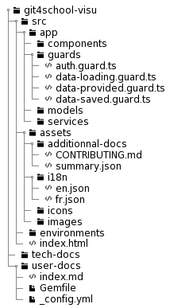

In this section we will detail the architecture of the application and the role of the main folders so that a developer can find his way around.

This is here that you will spend most of your time coding. It contains most of the source code within 4 sub-folders :
This folder contains all the components of the application. If you want to add a new page or develop a new feature on an existing page, it is in this folder that you will need to place the new components.
If you want to add or modify a graph, everything is in the folder
components/graphs.
To create a new component, execute ng g component components/<myComponent>.
This folder contains the guards as used in Angular. These guards are services that can be used to authorize access to a route or the leaving of a page. In this way, we use 3 guards :
auth.guard.ts: which ensures that the user is authenticated before allowing access to a protected routedata-provided.guard.ts: which ensures that valid and minimal data are loaded to ensure the proper functioning of the application. For example, if no valid configuration file is provided in the /overview page, it is not possible to access /questions-completion or /edit-metadatadata-loading.guard.ts: which authorizes the leaving of a page if the associated component is not loading. This guard is used in the /overview page to prevent the user from leaving the page if the processing of repository data is in progressIf you want to create a new guard, do the following :
ng g guard .\guards\<myGuard>src/app/app-routing.module.ts{
path: 'myPath',
component: MyComponent,
canActivate: [AuthGuard, MyGuard],
canDeactivate: [DataLoadingGuard]
}This folder contains all the models of the application. These are classes that can be instantiated to facilitate data management in the application. We have 6 fairly explicit model classes :
To create a new model, execute ng g class models/<myModel> --type=model.
This folder contains the application services. The services allow to perform operations that can be common to several components in the application. Let's detail the 4 services we use:
auth.service.ts : which allows to manage the user authentication to Github.data.service.ts : which allows to store the data to be shared between the components. It is thanks to it that the user can navigate in the application without having to enter the configuration file each time he changes pages.json-manager.service.ts : which allows to manage the configuration file (upload/download/verification)commits.service.ts : which allows to manage the retrieval of data from Github repositories, as well as the generation of statistical data (used for downloading and for displaying graphs /students-commits and /questions-completion)To create a new service, execute ng g service services/<myService>.
Then use it in component or a service by declaring it in the constructor :
constructor(
private commitsService: CommitsService,
public myService: MyService
) {}Note that if you want to use a service in a HTML file, you have to declare the service as
public!
This folder contains useful resources for the application.
This folder contains useful resources for generating additional documentation such as this page.
If you want to add a page to the documentation, create a file <myDoc>.md and update the summary.json file by adding an element as following (see this page) :
[
{
"title": "Architecture details",
"file": "CONTRIBUTING.md"
},
{
"title": "My documentation",
"file": "myDoc.md"
}
]This folder is very important because it manages the localization of the application. It contains the json files corresponding to the possible localizations of the application. For the moment there are only 2 files:
en.jsonfr.jsonIf you want to add a localization, create a file <myLocalization>.json and update the file src/app/app.component.ts :
constructor(
public authService: AuthService,
public dataService: DataService,
private router: Router,
public translate: TranslateService
) {
translate.addLangs(['en', 'fr', 'myLocalizattion']);
translate.setDefaultLang('en');
}In this new file you must translate every variable contained in the other files. Which means that there must be the same variables in all localization files. To make your life easier and avoid forgetting things, I advise you to use BabelEdit.
This folder contains images used in the application.
There are no special rules, you can reorganize the folder at your convenience if the content starts to grow a bit too much. If so, update the path of images used for the user guide in /home.
You can access these files with assets/images/<myImage>.
This folder should not be present because it is generated after a merge on master only and should never be pushed. However, it is in this folder that the technical documentation will be generated by serving it locally. This is very useful to see the changes made before pushing the code.
To serve the technical documentation locally, execute yarn run serve-tech-docs.
This folder contains a collection of files, including markdown files which, once converted using Jekyll, will result in HTML files that constitute the user documentation. This conversion is done automatically after the merge on master thanks to Github Pages.
Prerequisite : to serve the user documentation locally, Ruby and and Bundler must be installed and run
bundle install.
To serve the user documentation locally, execute yarn run serve-user-docs.
docs/ : this folder contains all the markdown (.md) files that will constitute the user documentation. .gitignore : this file has the same function as the one present at the root of the project, but its scope is limited to the user documentation. In particular, it prevents the generated documentation from being pushed after serving it locally_config.yml : this where the options to configure Jekyll are set upGemfile : it's in this file that are indicated the Jekyll plugins to use, only when serving locally. When running bundle install, the Jekyll plugins indicated in this file are installedGemfile.lock : this file is used to install the same versions of Jekyll plugins from one machine to another and therefore facilitates collaborative workindex.md : this is the user documentation root, the home pageFor more detailled information about the directory structure, you can read the Jekyll documentation.